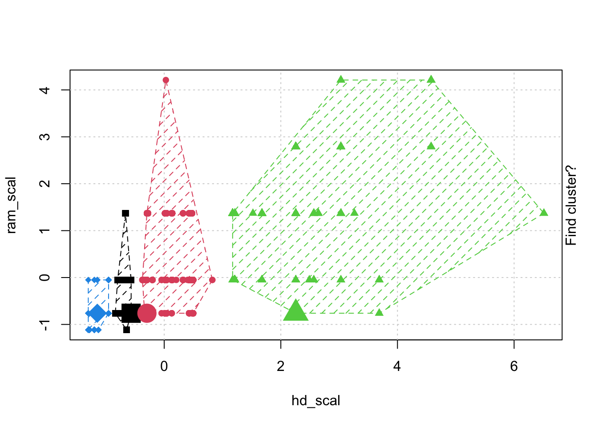
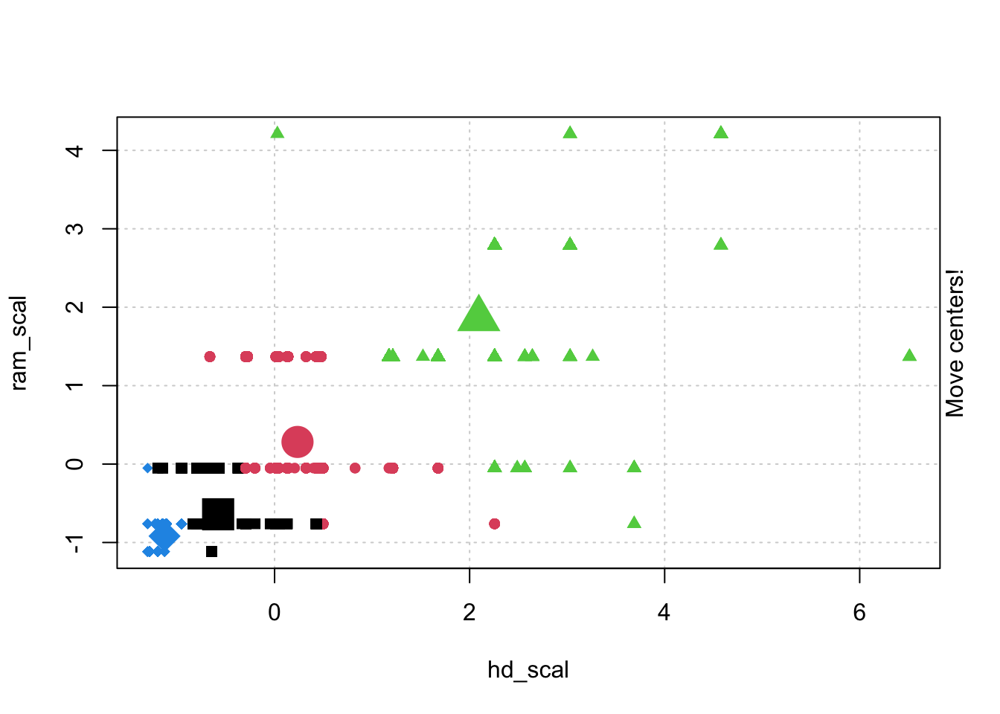

Warning: package 'dplyr' was built under R version 4.2.3
Attaching package: 'dplyr'
The following objects are masked from 'package:stats':
filter, lag
The following objects are masked from 'package:base':
intersect, setdiff, setequal, union
Code
library(ggplot2)library(RColorBrewer)computers =read.csv("https://raw.githubusercontent.com/guru99-edu/R-Programming/master/computers.csv") # Only retain two variables for illustrationrescaled_comp <- computers[4:5] %>%mutate(hd_scal =scale(hd),ram_scal =scale(ram)) %>%select(c(hd_scal, ram_scal))ggplot(data = rescaled_comp, aes(x = hd_scal, y = ram_scal)) +geom_point(pch=20, col ="blue") +theme_bw() +labs(x ="Hard drive size (Scaled)", y ="RAM size (Scaled)" ) +theme(text =element_text(family="Georgia"))
Without grouping by species
Code
# install.packages("animation")library(animation)set.seed(2345)library(animation)# Animate the K-mean clustering process, cluster no. = 4kmeans.ani(rescaled_comp[1:2], centers =4, pch =15:18, col =1:4)


Code
## Iris example# Without grouping by speciesggplot(iris, aes(Petal.Length, Petal.Width)) +geom_point() +theme_bw() +scale_color_manual(values=c("firebrick1","forestgreen","darkblue"))
With Grouping By Species
Code
# With grouping by speciesggplot(iris, aes(Petal.Length, Petal.Width, color = Species)) +geom_point() +theme_bw() +scale_color_manual(values=c("firebrick1","forestgreen","darkblue"))
Code
# Check k-means clusters## Starting with three clusters and 20 initial configurationsset.seed(20)irisCluster <-kmeans(iris[, 3:4], 3, nstart =20)irisCluster
## Hierarchical Clustering## Dataset: USArrests# install.packages("cluster")arrest.hc <- USArrests %>%scale() %>%# Scale the datadist(method ="euclidean") %>%# Compute dissimilarity matrixhclust(method ="ward.D2") # Compute hierarchical clustering# Visualize using factoextra# Cut in 4 groups and color by groupsfviz_dend(arrest.hc, k =4, # Cut in four groupscex =0.5, # label sizek_colors =c("firebrick1","forestgreen","blue", "purple"),color_labels_by_k =TRUE, # color labels by groupsrect =TRUE, # Add rectangle around groups,main ="Cluster Dendrogram: USA Arrest data") +theme(text =element_text(family="Georgia"))
Warning: `guides(<scale> = FALSE)` is deprecated. Please use `guides(<scale> =
"none")` instead.